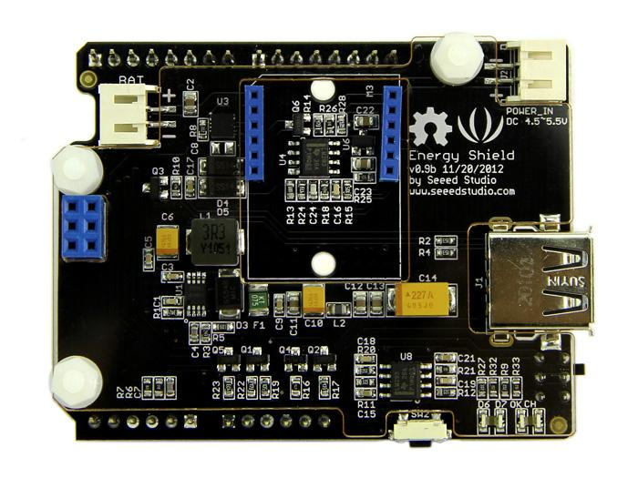
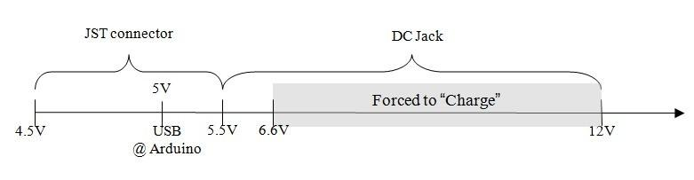
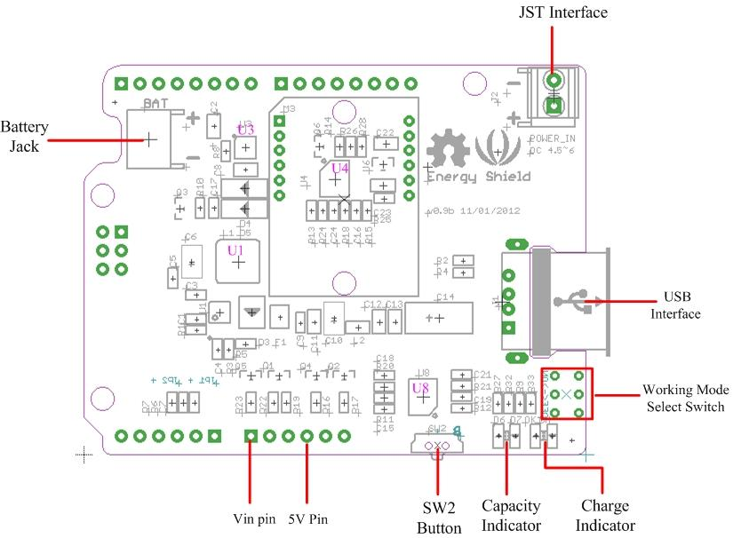
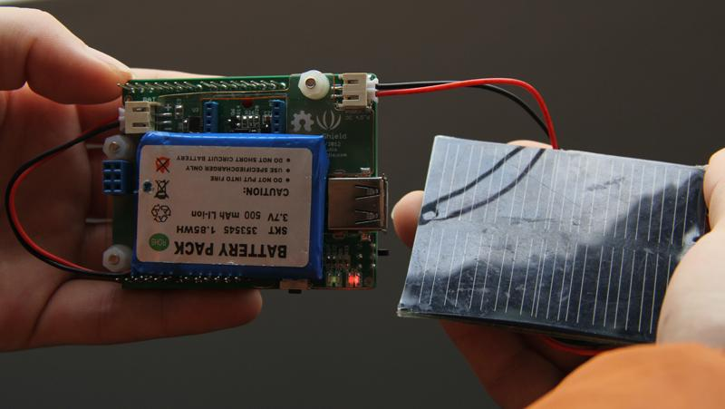
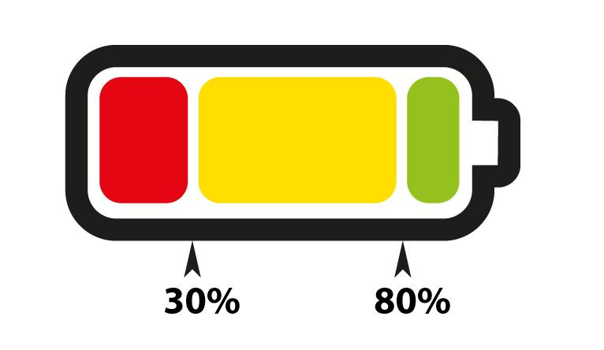
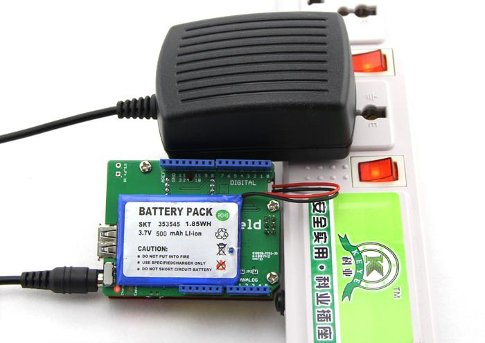
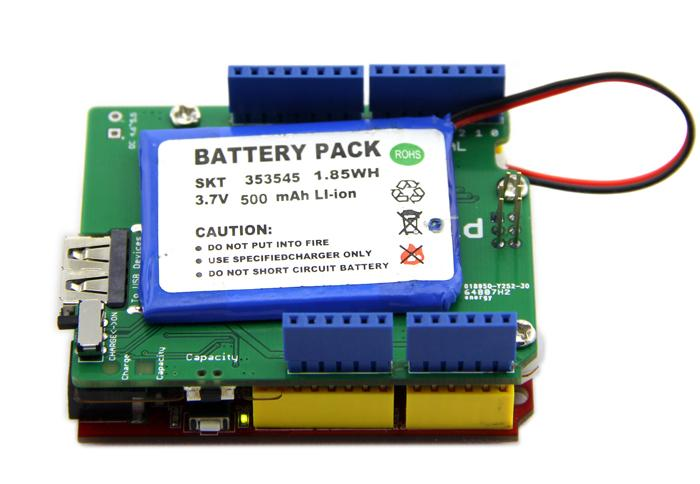
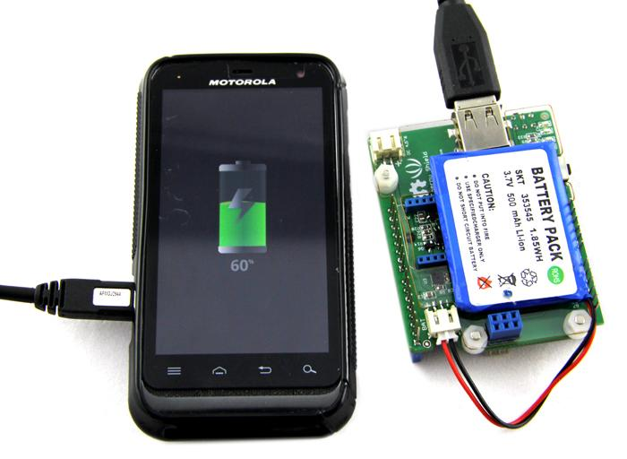
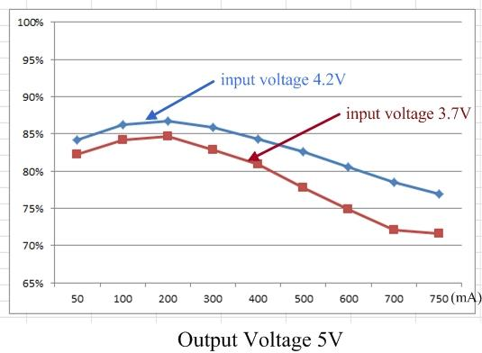

Energy Shield is a LiPo battery based power shield that keeps your project alive. It keeps its battery charged whenever an available power source exists. It accepts a wide range of power sources, from common solar cells via JST connector and USB via USB port on microcontroller, to 9V and 12V DC adapters via DC Jack on your Arduino. Meanwhile it can not only provide power for your Arduino project, with a standard USB port populated on the shield, it’s also capable of rescuing your mobile electric devices from dying batteries, such as mobile phone, mp3 and tablet.
Model: SLD01096P

Power Output Specifications
| Item | Min | Typical | Max | Unit |
|---|---|---|---|---|
| voltage | 4.9 | 5 | 5.1 | V |
| current | 5 | / | 750 | mA |
Power Input Specifications via JST Connector
| Item | Min | Typical | Max | Unit |
|---|---|---|---|---|
| Effective Voltage | 4.5 | 5 | 5.5 | V |
| Current | 1 | / | 800 | mA |
| Protection Voltage | / | / | 12 | V |
Working Mode Explanation
Energy shield can draw current from three different ports to charge the battery, including JST connector, USB port @ Arduino and DC jack. The voltage ranges vary as below:

When input voltage is under 6.6V, you can switch the working mode of Energy Shield between “Charge” and “ON” via the working mode select switch. In “Charge” condition, Lipo battery doesn’t output but only pull current from any existing power source. In “ON” condition, the battery gets charged as well as supplies power to the whole system.
However when input voltage exceeds 6.6V, Energy Shield is forced to enter the “Charge” mode regardless of the switch status.

Hardware Config
U1: ISL97516 IC, boost chip;
U3: CN3065 IC, charge management chip;
U4,U8: LM293D IC, dual differential comparators;
Charge Indicator: it lights in charging status;
Capacity Indicator: indicate the remaining life of battery;
SW2 Button: check the capacity of battery;
Pins Used on Arduino
Vin pin: convey power from DC jack to charge battery;
5V pin: convey power from USB port to charge battery;
Other Interfaces
JST socket：provided for external power sources that requires JST connector, like solar panel;
Battery socket: used to hook up LiPo battery;
USB port: output 5V for other devices;
You can charge the Lipo battery with massive external power sources. Here we show you usages of two common powersources.
1) Solar Panel
Solar panel is one of the most common green power sources we use. The typical output of one unit is around 5V. We provides Lots of solar panels at our store. They are all pre-assembled with JST connencors which can seamlessly match up with Energy Shield.
Plug solar panel into JST socket on the shield as below.
Note: Make sure there is sufficient light to provide considerable current.

Now, press down SW2. You will find the "Charge" indicator LED lights up. The other indicator "Capacity" indicates remaining power of battery. When the remaining power is below 30%, it turns red. When remaining power is between 30% - 80%, it turns yellow. Otherwise it's green.

2) 9V Adaptor
If you are using a DC adaptor to supply power to your project, then 9V adaptor won't be unfamiliar to you. By connecting a 9V adapter to DC Jack of Arduino, you can run your project as well as charge the battery simultaneously.

1) Supply Power For Arduino

Switch the working mode select switch to "ON". Check on the power indicator LED on Arduino to see if it works appropriately.
2) Supply Power For Mobile Devices

Use the standard USB port on the shield to supply power to mobile devices.

The graph above describes the conversion efficiency of boost circuit of Energy Shield. Boost circuit boosts the voltage of Lipo battery, which is typically 4.2V or 3.7V with the drop of remaining power, to 5V and supplies outward. You can find this conversion efficiency peaks when output current is around 200mA.
Energy Shield Eagel File
CN3065 Datasheet
ISL97516 Datasheet
LM293D Datasheet
If you have questions or other better design ideas, you can go to our forum or wish to discuss.
Copyright (c) 2008-2016 Seeed Development Limited (www.seeedstudio.com / www.seeed.cc)